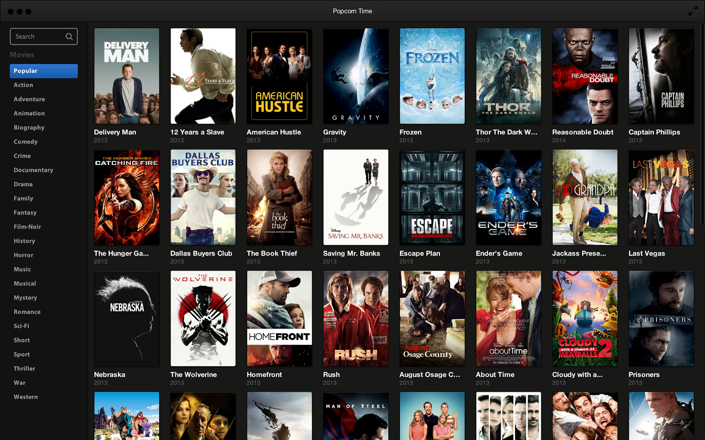

<div class="interests-container">
    <div class="container main-content bg-white-opac ">
        <h1>Interesses</h1>
        <div>
            <h3>Voetbal</h3>
            
            <p>
                Al van kleins af aan was er een passie voor voetbal. Ik ben namelijk beginnen voetballen op de leeftijd van 6 jaar bij KVV
                Balegem. Vervolgens heb ik voor verschillende andere clubs gespeeld zoals FC Velzeke, KSV Sottegem en Eendracht
                Grotenberge. Op 20 Jarige leeftijd ben ik gestopt met voetballen aangezien het op die leeftijd niet enkel
                meer rond de sport zelf draaide maar ook om het geld. Hierdoor kwam er veel meer bij kijken dan enkel tijd
                vrijmaken voor trainingen en wedstrijden. Doordat de combinatie tussen studeren en voetbal steeds moeilijker
                werd, was ik verplicht om een keuze te maken en mij volledig te gaan richten op mijn studie. Natuurlijk blijven
                de genen in mijn lichaam zitten en volg ik de voetbalcompetities op de voet.
            </p>
        </div>
        <div>
            <h3>Films & Series</h3>
            
            <p>
                In mijn vrije tijd kijk ik heel graag naar films en series. Zo ga ik soms eens naar de cinema met vrienden als ontspanning
                en kijk ik wel eens aflevering van een serie of een film voor het slapen gaan. De genres daarin kunnen variëren
                van actie, misdaad tot komedie. Op het vlak van series is er nog werk aan de winkel aangezien ik maar één
                serie van bij de start volg. Ik ben namelijk een fan van 'Game Of Thrones' en kijk al enorm uit naar het
                nieuwe seizoen.
            </p>
        </div>
    </div>
</div>